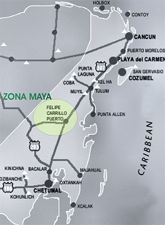
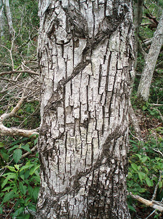

|
 |
 |
Puntos de
Inflexión Ecológica
- Cómo funcionan?
- Transformando círculos viciosos a círculos virtuosos
- Ingredientes para el éxito
- Elaboren sus propios Puntos de Inflexión Ecológica
Historias por Región
Historias por Tema
- Agricultura
- Agua y Cuencas
- Bosques
- Ecosistemas Urbanos
- Educación
- Energía
- Negocios
- Pesquerías
- Salud Pública
Videos Cortos
- Salvando un arrecife coral y una pesquería
(Filipinas) - Revitalizando vecindades urbanas con jardines comunitarios
(Nueva York) - Revirtiendo la deforestación tropical con bosques comunitarios
(Thailandia) - Rellenando aguas subterráneas con captación pluvial
(Rajastán, India) - Escapando la trampa de pesticidas
(India)
Explicando el Éxito
- Salvando un arrecife coral y una pesquería
(Filipinas) - Revitalizando vecindades urbanas con jardines comunitarios
(Nueva York) - Revirtiendo la deforestación tropical con bosques comunitarios
(Thailandia) - Rellenando aguas subterráneas con captación pluvial
(Rajastán, India) - Escapando la trampa de pesticidas
(India)

Ecología Humana: Presenta los principios de la ecología humana que sirven de fundamento a los Puntos de Inflexión Ecológica
México - Quintana Roo - Agrosilvicultura Sustentable en la Zona Maya
- Autor: David Nuñez
- Aportaciones editoriales: Gerry Marten
Tras décadas de ser negados sus derechos madereros, las comunidades selváticas del estado Mexicano de Quintana Roo han re-descubierto lo que significa cuidar de la tierra. Al recuperar sus derechos, han asumido la responsabilidad de preservar la selva y diversificar su economía. Estableciendo zonas de bosque permanente, implementando organismos locales de gestión forestal, y promoviendo las empresas forestales comunitarias, se ha logrado revertir las tendencias de deforestación en la región, sirviendo de modelo de gestión forestal sustentable.
Varias horas hacia el sur y tierra adentro de Cancún y Playa del Carmen en el Estado de Quintana Roo, entramos a la llamada Zona Maya. Lejos de las arenas blancas y multitudes de turistas esta remota región selvática es a donde los Mayas se retiraron de los invasores - no solo de los Españoles durante la conquista, sino también del ejército Mexicano que apenas en 1901 logró controlar el área. Los últimos enfrentamientos de la Guerra de Castas se dieron alrededor de la ciudad de Chan Santa Cruz, que pronto fue renombrada Felipe Carrillo Puerto en un esfuerzo por borrar su importancia cultural e histórica a los nativos.

Atrincherada durante siglos, la cultura Maya resistió estos esfuerzos y hoy en día Felipe Carrillo Puerto sigue siendo la capital religiosa y cultural de los Mayas de Quintana Roo, lo cual es obvio aún para el visitante más casual en el lenguaje, la comida y la vestimenta. La ciudad también es sede orgullosa de un colegio de medicina tradicional Maya. Pero quizá la lo que uno mas aprecia tras pasar algunos días aquí es el verdadero sentido de comunidad, tan ausente de los centros turísticos, y reflejado en numerosas asociaciones civiles: conjuntos de danza y música tradicional, cooperativas de artesanos, organizaciones de mujeres, y demás grupos que celebran y preservan orgullosamente su patrimonio cultural.
Al salir de la ciudad para visitar las aldeas, no solo nos impacta la belleza salvaje de la jungla, sino también las chozas de palos, donde tantas familias aun viven en una sola habitación. La selva espesa se encuentra a escasos metros de distancia y no es fácil decir donde termina ésta y donde comienza el huerto familiar, donde docenas - más bien cientos - de hierbas, arbustos y árboles ofrecen sus semillas, hojas, raíces y frutos como alimento o medicina. "No tendré mucho dinero," nos dice Don Emiliano con una sonrisota al mostrarnos los usos de esta y aquella planta, "pero tampoco paso hambre."
Estamos en el ejido de X-pichil, como a media hora de la ciudad. Durante la mayor parte del siglo XX, el gobierno federal reclamó los derechos de extracción de madera de las propiedades ejidales, y otorgaba concesiones sobre los recursos forestales a empresas madereras paraestatales. Aquí la paraestatal Maderas Industriales de Quintana Roo fué la concesionaria, y durante casi 30 años que terminaron a principios de los 1980s gozó de subsidios y precios controlados. Bajo este sistema que artificialmente mantenía precios bajos y prohibía a los lugareños participar en el mercado de los productos forestales que ellos mismos cosechaban, se fomentó la deforestación. Ante la ausencia de cualquier iniciativa por gestionar adecuadamente los bosques, la mayoría de los ejidos (que por cierto son dueños de cerca del 50% de los bosques de México) optaron por talar la selva, vendiendo la madera a la paraestatal y utilizando los terrenos limpiados para la agricultura trashumante. Con las reformas de las décadas de los 1980s y 1990s, se disolvieron la mayoría de las paraestatales y fomentó la creación de grupos productores independientes dentro de la estructura ejidal.
Don Emiliano es uno de estos productores, y nos demuestra como el y sus compañeros están realizando la transición de la agricultura trashumante insostenible de cultivos anuales, a un modelo más sustentable de agrosilvicultura con árboles frutales, plantaciones madereras, extracción de chicle, y producción de miel de la abeja melipona. En un principio los ejidatarios de X-pichil se mostraron renuentes a adoptar este modelo, y solo lo hicieron varios años después de ver el éxito con que lo hacían algunos de sus ejidos vecinos. "Fuimos pendejos." nos dice Don Emiliano con añoranza. "De haber escuchado a los ingenieros antes, ahora ya iríamos mas avanzados…"
El punto de inflexión en esta historia se dio cuando los ejidatarios de la Zona Maya decidieron dejar de hacer negocio con la vieja paraestatal que les seguía ofreciendo los mismos precios bajos, y en vez comenzaron a buscar un precio justo por sus productos. Al hacerlo tuvieron que aprender mucho sobre el mercado maderero, pero también sobre la gestión forestal.
Para ayudarles, la Comisión Nacional Forestal lanzó un Plan Piloto Forestal con seis ejidos, durante tres años a partir de 1983. De acuerdo con la estrategia de este Plan Piloto Forestal, a cada ejido se le:
- Exigió la creación de Zonas Forestales Permanentes, lo cual limitó las áreas disponibles para la agricultura y cimentó los planes de gestión a largo plazo.
- Capacitó en la gestión forestal, para que cada comunidad asumiera toda responsabilidad en cuanto a la administración, cosecha y venta de sus productos forestales (tanto madereros como no).
- Apoyó en el desarrollo de empresas forestales comunitarias, ayudándoles a llevar al mercado sus propios productos.
Pero quizá el ingrediente clave, el cual permitió el éxito duradero del programa décadas después de que oficialmente terminó, fue el hecho de que además se impulsó la creación de organizaciones colectivas de base para mejorar la capacidad de negociación de los ejidos, ofrecer apoyo técnico y continuar toda esta labor una vez que terminaran los tres años del Plan Piloto.
Nuestra amable guía en esta excursión es Rosa Ledesma, Ingeniera Agrónoma que trabaja con una de estas organizaciones colectivas, la Organización de Ejidos Productores Forestales de la Zona Maya, que fue fundada en 1986 – es decir, en el último año del Plan Piloto Forestal - y que representa a 22 ejidos. En total existen cuatro de estas organizaciones en Quintana Roo, las cuales representan a 42 ejidos; mientras que otros 14 ejidos han desarrollado programas similares de manera independiente.
Las nuevas estrategias de mercadeo de sus maderas fueron tan exitosas que los lugareños pronto comenzaron a comerciar con otros productos, como son las hojas de la palma guano y de pastos para la construcción de palapas. Además estas comunidades pronto comenzaron a organizarse de otras maneras, por ejemplo las mujeres organizaron cooperativas de artesanas, y más recientemente se han comenzado a desarrollar proyectos eco-turísticos.
Varias de estas empresas forestales comunitarias han sido certificadas por la Forestry Stewardship Council (www.fsc.org) aunque los ejidatarios aun no se han beneficiado de tal certificación, ya que el mercado maderero Mexicano aun no responde a los incentivos de la certificación. Podría decirse que estas comunidades que antaño requirieron de intervención federal para corregir su rezago, ahora están a la vanguardia, esperando que el resto del país les de alcance.
Bajo un esquema político deficiente en que no se valoraban los árboles, estos eran considerados poco más que basura, y eran talados para abrir terrenos a la agricultura de subsistencia basada en cultivos anuales, misma que por la pobreza de los suelos constantemente requería de más terrenos deforestados. En cuanto se ofrecieron - o más bien, exigieron - precios justos por las maderas, se establecieron zonas forestales permanentes para limitar las zonas agrícolas. Comenzó a experimentarse con labranza profunda, composta y otros métodos para fijar los sembradíos. Se diversificaron los cultivos añadiendo árboles frutales (cítricos, mangos y guayabas) que no requieren ser re-plantados cada año. Siguieron las plantaciones de maderas preciosas, y ahora los ejidatarios cuentan con una variedad de cosechas, algunas de uso inmediato (maíz, frijoles, calabaza y chile), otras que tardan algunos años en dar fruto (árboles frutales y maderas que extraen del bosque), y otras que son inversiones a largo plazo (plantaciones de cedro y caoba).

Chicozapote con cicatrices de la extracción del chicle.
Esta diversificación de la economía ha permitido a un mayor porcentaje de las nuevas generaciones continuar sus estudios. Aunque los huertos familiares evitan el hambre, no ofrecían mayores oportunidades. Con mayores ingresos, se han ampliado los horizontes - y los peligros. Don Emiliano nos admite que se tomo la utilidad de su primera venta de madera en cervezas, pero pronto añade que sus hijos no son tan tontos. Ellos terminaron el bachillerato. Les irá mejor.
Aunque fue necesario un estímulo externo en la forma de un programa piloto del gobierno federal, a su vez financiado por el gobierno Alemán, la tradición democrática de los ejidos permitió que floreciera su espíritu autosuficiente, lo cual garantizó el éxito a largo plazo. Solo había que darles oportunidad. De hecho el motivo por el cual hizo falta intervenir, en gran parte fue para revertir el daño de décadas de malas decisiones, también impuestas desde fuera.
Todo cambió una vez que se les permitió a estas comunidades participar en el mercado de sus propios productos madereros. En cuanto se les devolvieron los derechos sobre los recursos naturales en sus tierras, la memoria ancestral colectiva fue activada en cuanto a la gestión de dichos recursos, lo cual es evidente en el número y diversidad de proyectos que surgieron en paralelo: la cosecha de palma guano y pastos para palapas; la extracción de chicle (que por cierto fue la cosecha que inicialmente dio origen a los ejidos); la apicultura con la abeja melipona… En breve, la abundancia de la naturaleza volvió a fluir por comunidades que habían sido, por lo menos parcialmente, aisladas de su riqueza.
Lo que comenzó como un programa piloto con seis comunidades, ahora incluye a más de cuarenta ejidos organizados en cuatro cooperativas dentro de la Zona Maya y en otras partes de Quintana Roo. En la Zona Maya la deforestación frenó a nivel imperceptibles desde la década de los 1990s, y la cobertura forestal ha aumentado por lo menos en un 10 por ciento. Al regresar el control de los recursos a las comunidades, estas pudieron cambiar su futuro y convertirse en modelos de sustentabilidad.
Referencias
The Institutional Drivers of Sustainable Landscapes: a Case Study of the 'Mayan Zone' in Quintana Roo, Mexico, Bray, et al., Land Use Policy, 21 (2004) 333-346
The Mexican Model of Community Forest Management: the role of Agrarian Policy, Forest Policy, and Entrepreneurial Organization, Bray, et al., Forest Policy and Economics, 8 (2006) 470-484
Mexico's Community Managed Forests as a Global Model for Sustainable Landscapes, Bray, et al., Conservation Biology, Vol. 17 No. 3, June 2003, 672-677
Community Forest Enterprises as Entrepreneurial Firms: Economic and Institutional Perspectives from Mexico, Antinori & Bray, World Development, Vol. 33 No. 9, (2005), 1529-1543
Estrategias de Recuperación de Selva en dos Ejidos de Quintana Roo, México, Rebollar, et al., Maderas y Bosques, 8 (1), 2002, 19-38
Tropica Rural Latinoamericana sitio de Internet (Bosque Maya manejado por el pueblo, para el pueblo)
U'yo'olchi asociación civil sitio de Internet
Este sitio web contiene materia traducida del sitio web www.ecotippingpoints.org.
Traducción: David Nuñez. Redacción: Gerry Marten